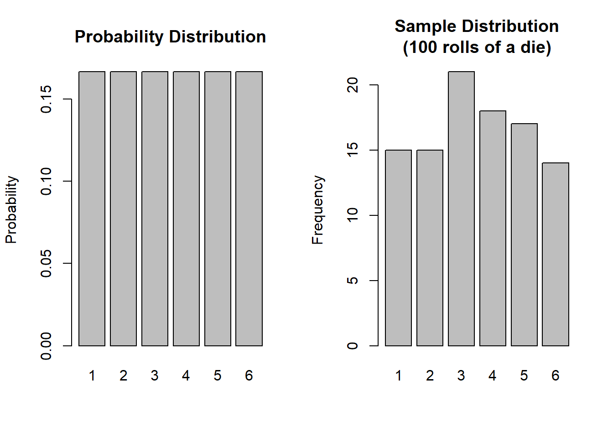
2B: Curves & Sampling
This reading:
- What are probability distributions and why are they relevant?
- How does using a sample to approximate a population lead to uncertainty?
- How can we quantify uncertainty due to sampling?
Probability distributions
We’ve seen some ways of describing and visualising the distributions of variables that we might observe when we collect data. Such a collection of observations on a single variable is often termed a “sample distribution”.
Another type of distribution that will prove to be very useful is a “probability distribution”.
A probability distribution is the (mathematical) description of the probabilities of occurrences of observing the different possible outcomes.
Note an important jump we are making is that we are moving from talking about distributions that we observe, to something more conceptual. Typically, this is because we want to talk more generally about the underlying process which generates the data.
For example, the function that governs the behaviour of rolling a single die is uniform in that each possible response has an equal probability (\(\frac{1}{6}\)) of being observed (below left). When we collect data by actually rolling a die 100 times, we will observe a sample distribution (below right).
Uniformity
When an equal probability is assigned to each possible response, we have what is known as the uniform distribution.
For a fair 6-sided die, the probability of the die landing on each side is 1/6, and the probabilities of all the possible responses sum to 1 (because it has to land on one of the sides).

The dice-rolling example is one involving a categorical distribution - i.e. data which has a discrete set of response options. We don’t have to use a 6-sided die - if it follows a uniform probability distribution, and there are \(n\) possible responses, then the probability of each response ocurring is \(1/n\).
However, the uniform probability distribution can be relevant for a continuous numeric variable as well (e.g. something which as well as taking the values 4 and 5 can also take 4.1, 4.11, 4.1111111111, 4.764968473 etc.. - they can take any real value). We can preserve the idea that probability sums to 1 for this sort of variable by having the probability as \(\frac{1}{b-a}\), where \(a\) and \(b\) are the lower and upper bounds of the response domain. Why? Because this makes the area of the distribution equal to 1 (area of a rectangle = width \(\times\) height. \((b-a) \times \frac{1}{(b-a)} = \frac{b-a}{b-a} = 1)\). This means we can compute areas of parts of the distribution in order to calculate probabilities!
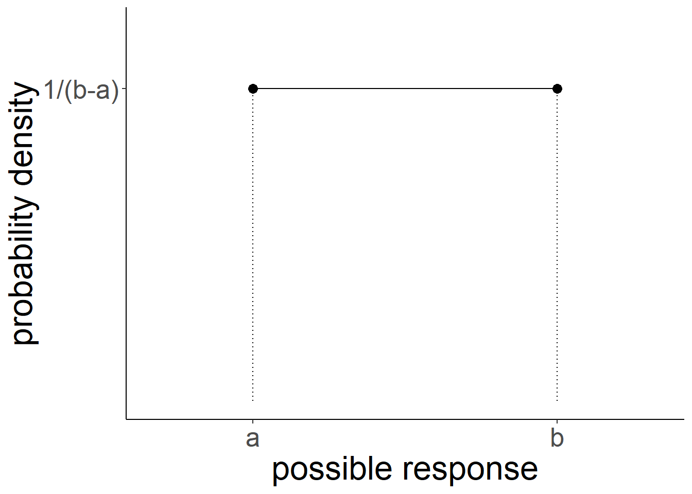
Normal distributions
We have actually already been talking about some of the parameters that define one of the most important probability distributions in statistics - what we call the “normal distribution”. Sometimes you will hear it referred to as a “bell curve” due to its resemblance to the shape of a bell (Figure 1).
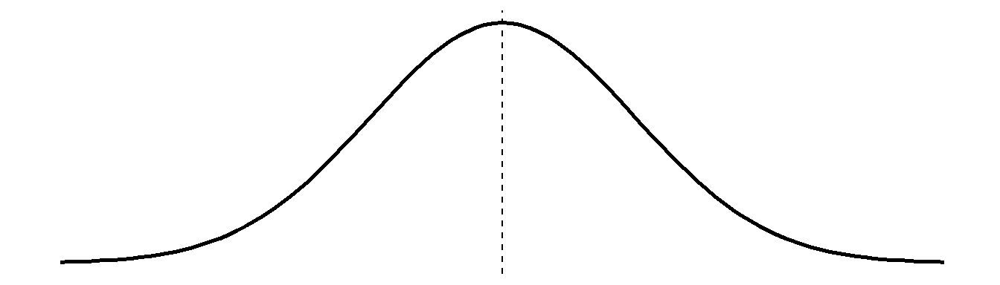
In the previous section we started to visualise sample distributions that looked similar to this (i.e. roughly bell-shaped), and we saw how the shape of such distributions depends on parameters such as the mean and variance/standard deviation1 (see Figure 2).
Code
wechsler <- read_csv("https://uoepsy.github.io/data/wechsler.csv")
ggplot(data = wechsler, aes(x = test1)) +
geom_histogram()+
xlim(0,100) +
ggplot(data = wechsler, aes(x = test2)) +
geom_histogram()+
xlim(0,100)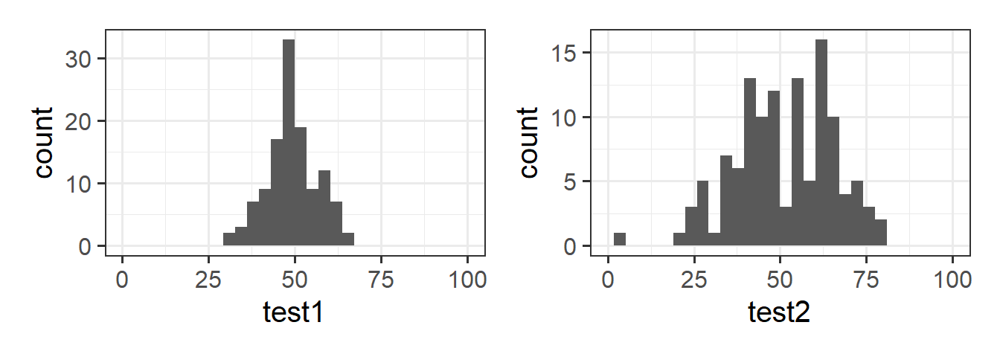
There are certain properties of normal distributions which we can exploit, in order to determine how plausible an observed value is relative to a distribution.
When a distribution is normal (symmetric and bell-shaped):
- 68% of values will lie within 1 standard deviation of the mean.
- 95% of values will lie within 1.96 standard deviations of the mean.
- 99.7% of values will lie within 3 standard deviations of the mean.

Let’s return to the IQ data we saw in 2A #histograms. We have our observed sample distribution of IQ scores:
Code
wechsler <- read_csv("https://uoepsy.github.io/data/wechsler.csv")
ggplot(data = wechsler, aes(x = iq)) +
geom_histogram()
We know how to address questions such as “what proportion of our sample has an IQ >120?”. We can use the data we have to calculate the proportion:
# number of IQ scores greater than 120 divided by number of scores
sum(wechsler$iq > 120) / length(wechsler$iq)[1] 0.075This tells us that 0.075 (or 7.5%) of our sample has an IQ of more than 120.
We are using IQ as an example here because IQ scales are developed and updated in attempts to standardise the tests so that the scores have an average of 100 and a standard deviation of 15.2 If we think of these two parameters (mean of 100, standard deviation of 15) as defining the expected distribution of IQ scores, then we can ask the question:
“what is the probability of observing someone with an IQ >120?”
What we’re asking here is for the amount of the normal distribution with mean = 100, sd = 15 that falls beyond 120 (Figure 3). Note that the distribution we’re talking about here is an abstract one that represents all the possible IQ scores that we might observe if we were to randomly sample the population.
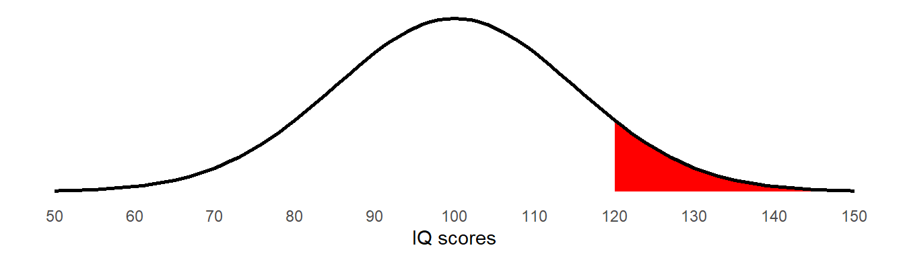
Proportions and Probability
- A probability is a representation of the chance of some event happening. It is theoretical, not observed.
- A proportion is a summary of how frequently some event actually happened. It is something we observe.
Years ago we would have to work out how many standard deviations this is above the mean (\(\frac{120 - 100}{15} = 1\frac{1}{3}\)) and then look up in a big table to work out the probability of observing something which is 1.33 standard deviations above the mean.
Conveniently, there are some functions which can do this for us. The pnorm() function will give us the area to the left or right (depending on whether we put lower.tail = TRUE/FALSE) of a given number:
pnorm(120, mean = 100, sd = 15, lower.tail = FALSE)[1] 0.09121122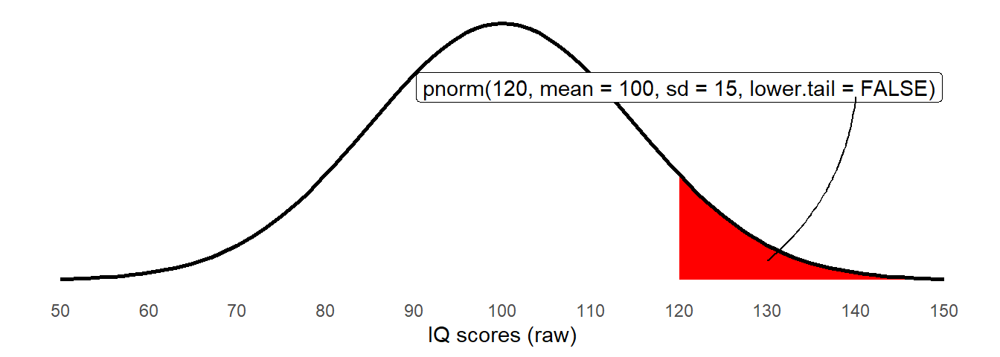
The probability of observing IQ <120 is easily obtained by changing the lower.tail argument:
pnorm(120, mean = 100, sd = 15, lower.tail = TRUE)[1] 0.9087888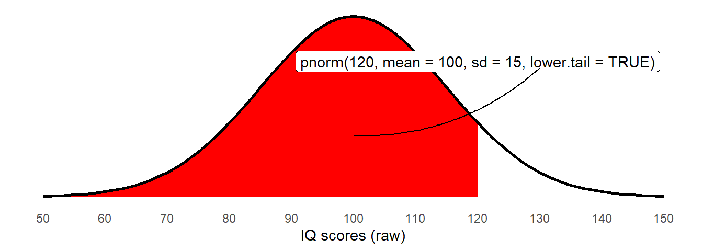
lower.tail argumentAnd we know that the total area under the curve is 1, so we can also use this to get the area to the right again:
1 - pnorm(120, mean = 100, sd = 15, lower.tail = TRUE)[1] 0.09121122The opposite functionality of pnorm() comes in the qnorm() function, which takes a specified area (e.g. 5%) and gives us the value at which that area falls above (or below, depending on the lower.tail).
So to find out at what score is the top 5% percent of IQ scores, we would need to ask the point at which there is 5% to the right, or 95% to the left:
# either:
qnorm(0.05, mean = 100, sd = 15, lower.tail = FALSE)
qnorm(0.95, mean = 100, sd = 15, lower.tail = TRUE)[1] 124.6728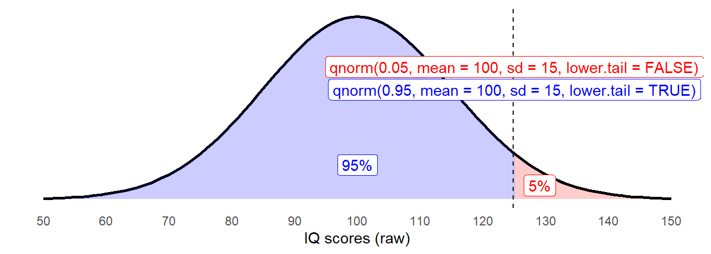
pnorm()takes a value on the x-axis and returns the area to the left (lower.tail = TRUE) or to the right (lower.tail = FALSE).qnorm()takes an area (from 0 to 1) and returns the value on the x-axis at which point that area is to the left (lower.tail = TRUE) or to the right (lower.tail = FALSE).
There are a couple of related functions which it is also worth knowing about:
dnorm()takes a value on the x-axis and returns the height of the curve (the density).
rnorm()returnsnrandomly generated values.
The Standard Normal Distribution
Note that if we translate our “IQ >120” to being in terms of standard deviations - \(\frac{120 - 100}{15} = 1\frac{1}{3}\) - then we can perform the same computations as we have done above, but comparing against against a normal distribution with mean of 0 and standard deviation of 1 (which are the defaults for the pnorm() function):
pnorm((120-100)/15, lower.tail = FALSE)[1] 0.09121122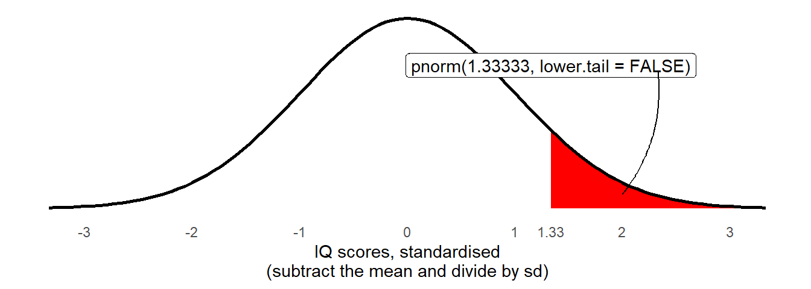
What we’re doing here is re-expressing the observed distribution into one which has mean of 0 and standard deviation of 1 - we are standardising them. This idea will become incredibly useful. For one thing it makes comparisons possible, for example, consider the two statements below:
- “I am 15 IQ points higher than average, and 24cm taller than average”
- “I am 1 standard deviation above the average IQ, and 2 standard deviations above average height”
The standard normal distribution - the normal distribution with mean = 0, sd = 1, is going to be seen a lot more frequently.
The relevance of the normal distribution?
We can motivate the relevance of the normal distribution in various ways. For instance, when we take a measurement of something such as the length of a stick, then we always have a bit of imprecision - our measurements will vary a bit. Assuming that our measurement tool is unbiased and this imprecision is purely random, we would expect the measurements of the stick to be ‘normally distributed’ around the true length of the stick (Figure 8).

In this way, the normal distribution captures the idea of random deviations around a central point. As we will see below, this becomes extremely relevant for statistics because we tend to collect data on a random sample of people, and each sample we could take will randomly deviate a bit in how well it represents the bigger group that we took it from.
Sampling & Sampling Distributions
Often, what we’re really interested does not concern a specific individual but the wider population in general - we are typically interested in things on average, and want to make generalisations such as “drug X will increase life expectancy by on average 2 years” or “higher levels of conscientiousness is typically associated with more happiness”. These sort of statements are made in reference to a population, not about individuals.3
In practice, it is rarely feasible to directly measure the entire population to calculate the average, so when we do research we tend to collect data from a subset, or sample. By using a random sample to represent a population of interest, we introduce uncertainty (due to sampling variability) in how accurate our sample is as to provide an estimate of something in the population.
For us to better understand the idea of “sampling variability”, it’s going to be necessary for us to clearly distinguish between populations and samples.
Samples & Populations
A sample statistic is a computed value based on our sample data, the we use to estimate a population parameter (the value of which is unknown).
We use different symbols to denote each of these:
| Sample Statistic | Population Parameter | |
|---|---|---|
| mean | \(\bar{x}\) | \(\mu\) |
| standard deviation | \(s\) | \(\sigma\) |
| variance | \(s^2\) | \(\sigma^2\) |
When we discussed IQ above, we had the idea of an underlying population distribution of everybody’s IQ scores. When we randomly choose one person (a sample of \(n=1\)), we might get someone who has an IQ a bit lower, or a bit higher, than the average.
The same applies when we take are taking the mean of a sample. Suppose we are interested in the average “life satisfaction rating” (Figure 9) for the entire adult population.
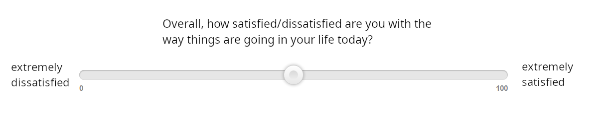
If we take a sample of say, \(n=30\) people, we might just happen to have a few more people in our sample who are highly satisfied, or a few more people who are more dissatisfied. Consequently, the mean of our sample will be a little bit higher/lower than the population average. And we can assume that all the random samples we could take will have “average life-satisfaction ratings” that are normally distributed around the true population average.
When we use the mean rating from our sample \(\bar x\) as an estimate of the mean rating in the population \(\mu\), it would be good to be able to quantify how much certainty we have in that estimate - i.e. how much do we expect the mean life satisfaction rating from samples of \(n=30\) to vary due to the randomness of sampling?
Let’s look at this with a little simulation.
Simulated Sampling
Let’s pretend that the average life satisfaction rating (measured on the slider in Figure 9) of the entire global adult population is exactly 65, and that the standard deviation of ratings is exactly 12.
However, let’s also pretend that we do not know this, and that we are interested in trying to estimate the average rating. All we have is the measurements of 30 people who we randomly sampled. We want to use the mean rating of our sample as an estimate of the mean rating of the population.
In R, we can simulate the act of randomly sampling 30 people’s ratings from the population with \(\mu = 65\) and \(\sigma = 12\) using rnorm()4:
our_sample <- rnorm(n = 30, mean = 65, sd = 12)
mean(our_sample)[1] 64.28839Note that the mean of our sample (64.29) is not quite the same as the mean of the population (65 exactly). As we know, samples vary. If we do the same thing again, R will take a different sample of 30, and so the mean of this new sample will also be different:
mean(rnorm(n = 30, mean = 65, sd = 12))[1] 68.22701Each time we get a new sample, we get a different mean:
mean(rnorm(n = 30, mean = 65, sd = 12))
mean(rnorm(n = 30, mean = 65, sd = 12))
mean(rnorm(n = 30, mean = 65, sd = 12))[1] 64.20016[1] 65.32239[1] 63.86801What we’re wanting to do here is think about all possible samples of 30 people we could have taken, and all the possible resulting mean ratings. Let’s consider 1000 different samples of 30 people that we could have taken, and for each one we calculate the mean rating. Where would all these different means fall? Some would be above our population parameter (i.e. we just might happened to have sampled some slightly more satisfied people) and some would be below.
We can use R to enact this repeated sampling: the replicate() function allows us to repeatedly execute a bit of code, which means we can take lots of samples and calculate their means. These means we can then visualise using hist():
manysamplemeans <- replicate(1000, mean(rnorm(n = 30, mean = 65, sd = 12)))
hist(manysamplemeans)
What does the simulation show us?
What we’re doing here is showing the process of taking many samples of the same size from a population and calculating a statistic (the mean) for each sample. The distribution of these sample statistics shows how the statistic will vary from sample to sample due to chance. Provided that our sampling is truly random, the sample statistics will be a normal distribution centered around the population parameter (the unknown value that we’re trying to estimate).
In the above example, for samples of \(n=30\) drawn from a population with mean \(\mu=65\) and standard deviation \(\sigma=12\), the sample means are centered around 65, and we’re quite likely to get sample means between 60 and 70, but less likely to see sample means \(<60\) and \(>70\). Importantly, we can quantify this. The distribution of means from samples of size \(n=30\) has a standard deviation of:
sd(manysamplemeans)[1] 2.253651This metric, the standard deviation of the sampling distribution of a statistic, is known as the standard error.
What happens with different sample sizes?
Note what happens to the distribution when we consider the means from 1000 different samples of size \(n=200\), rather than \(n=30\). Many more of the of the values are in a much narrower bracket (pay careful attention to the x-axis) than when we took lots of samples of \(n=30\).
manysamplemeans200 <- replicate(1000, mean(rnorm(n = 200, mean = 65, sd = 12)))
hist(manysamplemeans200)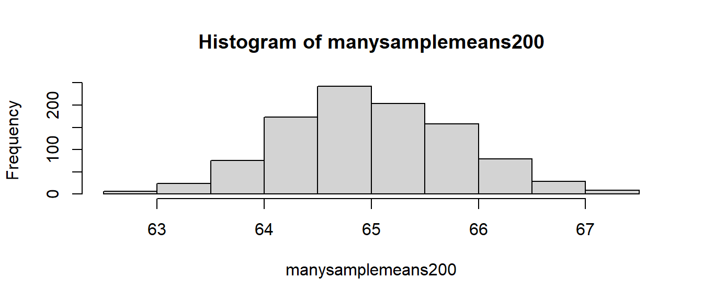
We can see that an estimate from a sample of 200 is more precise - rather than being between 60 and 72, most of the distribution is now between 63 and 67. So our estimate from a sample of 200 has a greater chance of being closer to the true population value than an estimate from a sample of 30.
Sampling Distribution and Standard Error
- The theoretical distribution of how sample statistics will vary on repeated sampling is known as the sampling distribution.
- The standard deviation of the sampling distribution is known as the standard error.
- Note that the bigger our sample size, the smaller our standard error - i.e., the more precise our sample means are going to be as estimates of the population mean:
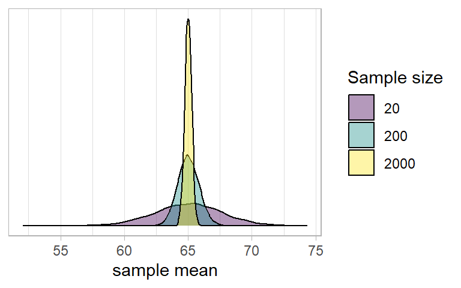
Standard Error in practice
In practice, we cannot actually take lots and lots of samples in order to construct a sampling distribution, and nor do we know the population parameters which are required to simulate samples like we did above (we do not know the population mean \(\mu\) or standard deviation \(\sigma\))
Instead, we start with just one observed sample, e.g. here are the life satisfaction ratings of the 30 people that I surveyed:
observed_sample <- c(53.8, 59, 51.1, 66.7, 86.1, 71, 65.3, 72.6, 56.6, 56.8, 50.1, 57.3, 60, 74, 73.4, 68.3, 53.5, 85.5, 68.8, 67.6, 67.4, 47.9, 46.3, 96.1, 52.8, 78.9, 74.8, 50.9, 78.2, 63.4)What we can do is either:
A: Estimate the standard error using a formula:
\[ SE = \frac{\sigma}{\sqrt{n}} \\ \quad \\ \begin{align} & \text{Where} \\ & \sigma = \text{standard deviation} \\ & n = \text{sample size} \\ \end{align} \] Note that \(\sigma\) is the standard deviation of the population, which is unknown to us. However, we can use the standard deviation of our sample (\(\hat \sigma\) or \(s\)) as our estimate of this:# SE = standard deviation / square root of n sd(observed_sample)/sqrt(length(observed_sample))[1] 2.275565or B: Simulate lots of sampling via bootstrapping.
This uses resampling with replacement5 from our original sample as a means of imitating repeated sampling. Note thereplace = TRUE:# bootstrap means of resamples with replacement of the same size as observed sample bootstrap_means <- replicate(1000, mean(sample(observed_sample, replace = TRUE))) # SE = sd of bootstrap resample means sd(bootstrap_means)[1] 2.251539
Central Limit Theorem (CLT)
Provided we have a sufficiently large sample, the sampling distribution of a statistic will be approximatley normally distributed even when the underlying population distribution is not normally distributed.
Let’s imagine we are interested in estimating these three things:
- The average life satisfaction rating of people in Scotland
- The proportion of people over 6 foot in Scotland
- The average income of people in Scotland
If we could, we would collect data from everyone in Scotland, and might find distributions like those in Figure 10:
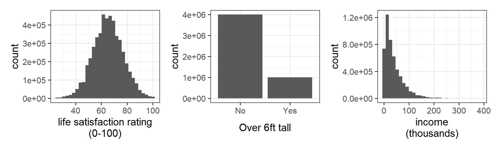
If we repeatedly collect samples of say, 50 people, and calculated the mean life satisfaction, the mean income, and the proportion >6 foot tall for each sample of 50, then the distribution of those sample statistics will be normal (Figure 11). This is known known as the “central limit theorem”.
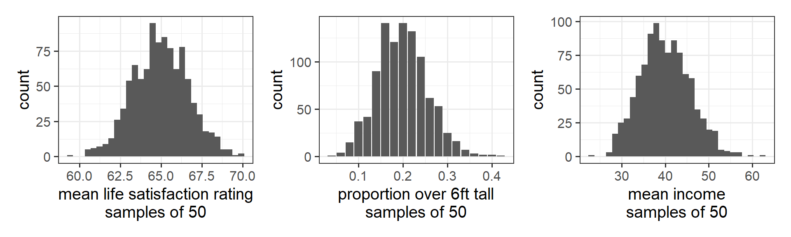
The central limit theorem (CLT) states that when we take sufficiently large random samples from a population, the distribution of the sample means will be approximately normally distributed. This holds regardless of whether the population is normal (or skewed).
You can find little applets online which help to illustrate this, such as those from StatKey and WISE.
Confidence Intervals
One thing that is often useful to do when using a sample estimate is to construct a range of plausible values, providing a view of our uncertainty, rather than just a point estimate (a single value).
In our simulation example (where we repeatedly take samples of the same size), we can simply ask for the points at which 2.5% of the sample means are below, and 2.5% are above. The quantile() function essentially orders our 1000 sample means and gives us the 25th and the 975th:
manysamplemeans <- replicate(1000, mean(rnorm(n = 30, mean = 65, sd = 12)))
quantile(manysamplemeans, c(0.025, 0.975)) 2.5% 97.5%
60.82298 69.51470 However, in real life remember we don’t have lots of sample means.
We just have the one:
observed_sample <- c(53.8, 59, 51.1, 66.7, 86.1, 71, 65.3, 72.6, 56.6, 56.8, 50.1, 57.3, 60, 74, 73.4, 68.3, 53.5, 85.5, 68.8, 67.6, 67.4, 47.9, 46.3, 96.1, 52.8, 78.9, 74.8, 50.9, 78.2, 63.4)We now know, however, that we can approximate the standard error using the formula \(SE = \frac{sigma}{\sqrt{n}}\):
sd(observed_sample)/sqrt(length(observed_sample))[1] 2.275565Remember that the standard error is the standard deviation of the theoretical distribution of all the possible sample statistics we might have computed (from all the samples of \(n\) that we might have taken). And recall also that from central limit theorem we can rely on assuming the sampling distribution to be normally distributed.
Combine these with the rules of thumb for normal distributions that we saw above, where 68%/95%/99.7% of values will lie within 1/1.96/3 standard deviation of the mean.
We can use these to create intervals which X% of the time will contain the true population value. For 95%, we simply use 1.96 \(\times\) standard error either side of our sample mean. This is called a confidence interval (CI).
\[ \begin{align} & \text{95\% CI} = \bar{x} \pm 1.96 \times SE \\ \qquad \\ & \text{Where: } \\ & \bar{x} = \text{sample mean} \\ & SE = \text{standard error} \end{align} \]
Our confidence interval6 is therefore:
xbar = mean(observed_sample)
se = sd(observed_sample)/sqrt(length(observed_sample))
xbar - (1.96*se)[1] 60.67989xbar + (1.96*se)[1] 69.60011Confidence Interval
A confidence interval is a range of plausible values for an estimate.
When we say that we have “95% confidence”, we mean that if we were to do the whole process (take a sample, compute a mean, compute a standard error, construct a confidence interval) over and over again, then 95 of every 100 confidence intervals we might construct will contain the true population parameter.
Think of it like a game of ring toss: our intervals are the rings, and the value we are trying to estimate is the stake. We are [X]% confindent that the ring will land on the stake.
Footnotes
remember that standard deviation is \(\sqrt{\text{variance}}\)↩︎
Often in neuropsychological testing, a set of “normative values” are provided in order to define “what is expected” (sometimes in reference to a specific population).↩︎
and the statements may not hold for all individuals - for certain people, some drugs just won’t work! but what is important for a healthcare system deciding on whether or not to purchase supplies of a drug is the average treatment effect.↩︎
If you’re working along with this, yours will be different, because it’s random!↩︎
Imagine a bag full of coloured marbles. If we sample with replacement, then we take a marble out, record its colour, and put it back. Then we take a marble out, record its colour, and put it back. And so on. This means we might get the same marble more than once.↩︎
using the formula \(\frac{\sigma}{\sqrt{n}}\) for standard error↩︎